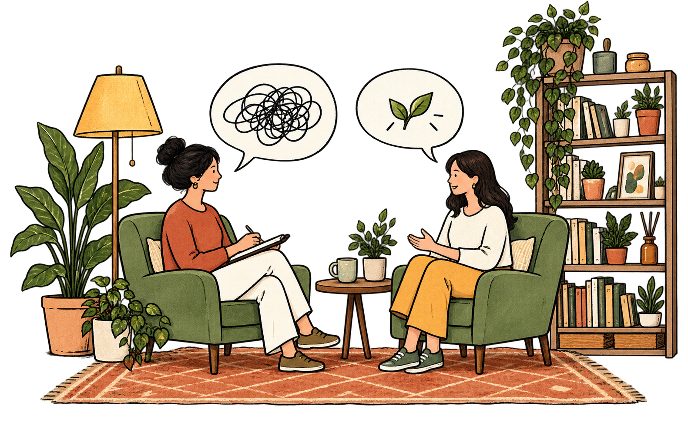

01
Learn More
Individual Counselling
Personal spaces for reflection, psychological support and self-understanding.
Enabling Intentional Living
Psychological support rooted in awareness, agency and overall wellbeing.
We often move through adult life on autopilot: meeting expectations, reacting to deadlines, and managing transitions without having the space to pause. Take 2 Collective is a space to step back.
Rooted in psychological awareness, emotional safety, and relational warmth, we create personal and shared spaces to help you understand your patterns, navigate uncertainty, and live with greater agency and intention.
Working together to make sense of what is happening, without judgment or prescription.
Practical psychological insights that apply directly to career pressures, burnout, and adult relationships.
Recognizing that who you are today is shaped by transitions, family contexts, and societal expectations.

Five ways to pause, connect and grow: tailored for personal, community, and reflective needs.

Personal spaces for reflection, psychological support and self-understanding.

Shared spaces to learn, reflect, connect and explore alongside others.

Connecting classical dance, rhythm and affective somatics for everyday regulation.

Beyond the Boards, exam transitions and community dialogues grounded in lived reality.

Verified crisis helplines, the Emotion Wheel, and thoughtful essays to pause and return to.

I'm a Counselling Psychologist with a Master's in Lifespan Counselling from St. Xavier's College, Mumbai.
My work sits at the intersection of psychology, everyday life and the questions that come with growing up: around identity, relationships, ambition, uncertainty, transitions and the choices we make along the way.
Take2 grew from a question I keep returning to:
"How can we navigate adult life with greater awareness, agency and wellbeing?"
My own experiences across psychology, UPSC preparation and personal finance have shaped the questions I bring to this work. Different worlds, but all of them have taught me something about how people make choices, deal with uncertainty, define success and figure out what comes next. Take2 is where these threads come together: with psychology at its heart.
I'm interested in making psychological ideas and support more accessible, understandable and relevant to everyday life through therapy, workshops, conversations, projects and collaborations.
It's the space between living automatically and living intentionally: a space to reflect, learn, connect, experiment and choose how we want to live.
"We pause to reconsider what we want, what we need, and who we are becoming."
Bringing psychology into active dialogue with classical arts, student transitions, cognitive health, and language.
Movement & Psychology
Using the lived experience of training in classical dance to understand and work with mental health: exploring flow state, emotional literacy, and nervous system regulation.
Explore Dance & Somatics →
Student & Youth Transitions
Psychological support for students, parents, and educators navigating the board exam journey and post-exam transitions with sustainable mindset and self-worth.
Explore Aspirants Space → Lifespan & Cognition
Lifespan & Cognition
Bridging neurobiology with everyday lifestyle: cognitive vitality, sleep, neuroplasticity, and memory health across adult life stages.
Read About Brain Health → Culture & Dialogue
Culture & Dialogue
Culturally grounded conversations in Marathi and regional languages, de-stigmatizing therapy through everyday idioms and lived stories.
Explore Bhasha Project →Evidence-based emotional frameworks, 24/7 helplines, and short reflective essays to pause and return to.
Verified, free, 24/7 support lines across India including Tele-MANAS (14416), KIRAN (1800-599-0019), and AASRA.
Access Verified Helplines →Move beyond vague distress by pinpointing secondary and tertiary emotional states with granular clarity.
Explore & Download Wheel →Why constantly pushing through exhaustion shuts down the prefrontal cortex, and how somatic deceleration restores agency.
Addressing ambiguous loss, study isolation, and decoupling your fundamental worth from exam marksheets.
"Sometimes, all it takes is a little space to begin again."
Whether you are looking for individual therapy, curious about our group workshops, or exploring a collaboration: we would love to hear from you.